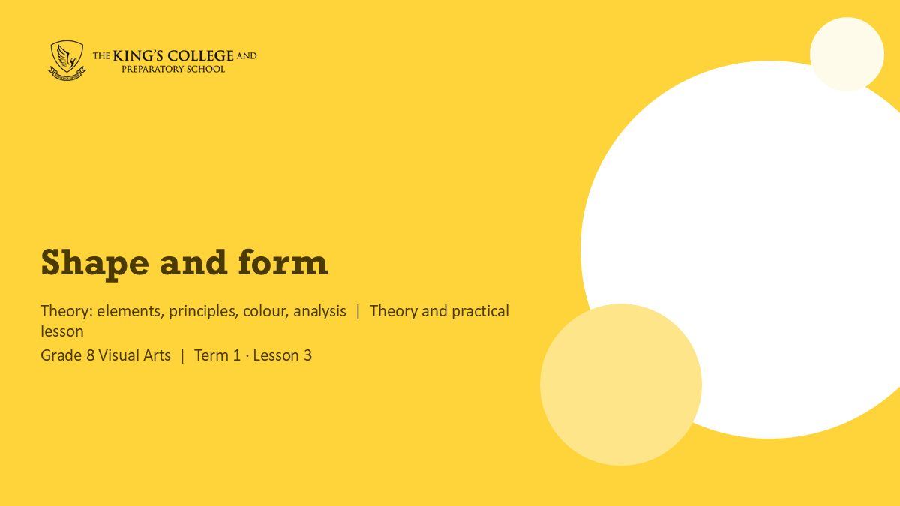

Term 1 · Lesson 3 · Theory and practical lesson
Shape and Form
Start Here
Today I Will
- Today I will tell the difference between geometric and organic shapes, and positive and negative shapes
- Today I will explain how a shape becomes a form
- Today I will turn a circle, square and rectangle into a sphere, cube and cylinder
Here is a flat circle on the board and a real ball in my hand. They are the same shape. Why does only one look round?
Words to Know
| Word | Meaning |
|---|---|
| Shape | An element of art: a flat, two-dimensional area with height and width, made by a line or by a change of colour or value. |
| Form | An element of art: a three-dimensional shape with height, width and depth, or the illusion of one created with shading. |
| Geometric shape | A regular, measurable shape with straight lines or perfect curves, such as a square, triangle or circle. |
| Organic shape | An irregular, free-flowing shape like those found in nature. Also called a free-form shape. |
| Two-dimensional (2D) | Flat, with height and width but no real depth, like a drawing or painting. |
| Three-dimensional (3D) | Having height, width and depth, like a sculpture you can walk around. |
Slides

Videos
Notes
Geometric and organic shapes; positive and negative shape; how a shape becomes a form (cube, sphere, cylinder, cone) through tone.
Two Families of Shape
| Geometric shapes | Organic shapes |
|---|---|
| Regular and measurable | Free and irregular |
| Straight edges or perfect curves | Wavy, bumpy, flowing edges |
| Mostly made by people: windows, tiles, road signs | Mostly found in nature: leaves, clouds, puddles, flames |
| Feel ordered, calm or strong | Feel natural, alive or relaxed |
From Shape to Form
- Circle to sphere: Shade from light to dark in curves around a white highlight.
- Square to cube: Add a second square behind, join the corners, then give each side its own tone.
- Rectangle to cylinder: Curve the top into an ellipse and the bottom too, then shade in vertical bands.
- Cone: A triangle with a curved base; shade in bands that narrow towards the point.
A shape is flat; add light and dark and it becomes a form.
Practical
You need: Visual journal, HB, 2B, 4B and 6B pencils, eraser
Six Shapes and Three Forms
- Rule six boxes across the top half of a journal page.
- In boxes 1 to 3, draw three different geometric shapes with clean HB outlines.
- In boxes 4 to 6, draw three organic shapes from nature (a leaf, a cloud, a stone).
- Shade the negative space in one organic box, so the shape appears as a light silhouette.
- On the bottom half, draw a circle, a square and a rectangle in a row.
- Turn them into a sphere, a cube and a cylinder with simple light-to-dark shading.
- Label every box and every form.
- This page is marked out of 10 (Shapes and forms): three geometric and three organic shapes, clearly different (3); the sphere, cube and cylinder look three-dimensional (4); clean edges without outlines on the forms (1); every box labelled (2).
Marked practical (10 marks), Shapes and forms: three geometric and three organic shapes, clearly different (3); the sphere, cube and cylinder look three-dimensional (4); clean edges without outlines on the forms (1); every box labelled (2).
Test Yourself
- What is the difference between a shape and a form?
- Give one example each of a geometric and an organic shape.
- What turns a flat circle into a sphere on paper?
Show answers
1. A shape is flat (2D, height and width); a form is 3D (height, width and depth) or looks 3D. 2. Geometric: square, triangle, circle. Organic: leaf, cloud, stone, flame. 3. Shading (value): light to dark in curves around a highlight.
Finished Early?
Practise spotting and drawing the two families of shape.
- Draw a line down the middle of a journal page.
- On the left, draw five geometric shapes you can see in the classroom.
- On the right, draw five organic shapes from nature (a leaf, a cloud, a flame...).
- Outline one shape on each side with a heavy contour line and the rest with light lines.